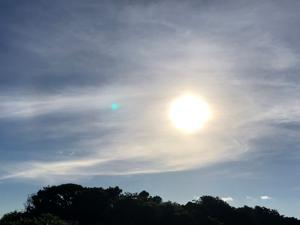
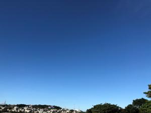

うるがいの話 ある日
最新:
夏空
うるがいとは 前提知識です
カニの画像をクリックすると『うるがいの話』サイトを表示します

うるがい(ｳﾙｶﾞｲ urugai)とは、『もずくがに』の名前でとても大きくなります。

たながー（ﾀﾅｶﾞｰtanagaa）とは手長えびのことで、何種類かあり大きいのは車
エビぐらいになります。

ぶながー(bunagaa)とは、赤い髪の毛、赤い身体、そして身長は１ｍ２０ｃｍ
ぐらい、川の蟹を食べているの目撃された。場所は沖縄県国頭郡大宜味村のと
ある村僕の隣近所に住んでいる爺さんから、聞いた話です。
2021年07月10日 (土）夏空
16:01


梅雨明けから、晴れが連続。写真は金曜日の夏空、ブルースカイそのもの。那
覇市議の選挙カーからの音がうるさい、運動している人は必死なんだろうけど
オリンピック東京都観戦が無観客になった。すでに当選したチケットは全て払
い戻ししているので、影響はないが。以前の職場で、チケットが当選し行く気
満々だった人がいたが、どうなっているのだろうか。まだ、パラのチケットの
扱いは決まっていないが、おそらく無観客かな、当選しているチケットは・・
・・・。コドモは宣言が延長されたのでそれに合わせて、飛行機の予約を９月
に変更した。もう、諦めたらと思うが、コロナそのものは来年も続くだろうと
いう情報をコドモは真顔で話していた。７月の連休で職場を退職する（年休消
化があり、実際は７月末）子供から、昨日の夜連絡があり、産業医などを紹介
するので休職扱いで暫く休む事を考えたらと東京の本社から勧められたとのこ
と。け！、この時期に及んで、既に事務方は退職手続きを初めていて８月以降
の市民税の振り込み通知も送られているのに（子供は私に収めてと持ってきた
）。子供には、意志を貫き辞めるよう努める。残業６０時間を前提とした仕事
をしている、子供はその日も、よる９時過ぎまで仕事をしていた。連休の７月
２２日には、晴れて次のステップへ進むようヨメも子供と長々電話していた。
私の頭の片隅に、高校時代にＦＭ放送をカセットテープに録音した女性シンガ
ーの曲が流れる。
検索yahoo!知恵袋では
多分洋楽だと思うのですが、ブル～スカイ♪・・・・・という歌詞がある曲を
知っていますでしょうか?
「I Can See Clearly Now(アイキャンシ－クリアリ－ナウ）」Jimmy Cliff
（ジミ－クリフ)かな？
残念、ユーチューブも調べたが無い、仕方ないこれが近かった
Mr. Blue Sky | Electric Light Orchestra | Pomplamoose
でも、ブルースカイで検索すると面白い曲が沢山あった。青空は、皆も好きな
んだろう。